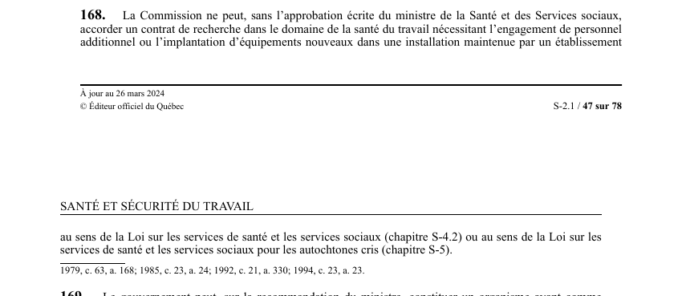

art-168-LSST : contrats recherche santé travail
Un article du wiki ⚖️ Recueil législatif
🌐 LegisQuébec · 📄 PDF officiel (page 47)
Texte officiel : capture du PDF

🔗 Ouvrir a cette page : LSST.pdf : page 47 · texte a jour au 26 mars 2024
En bref
La Commission ne peut, sans l'approbation écrite du ministre de la Santé et des Services sociaux. Cette obligation vise la Commission.
- Accorder un contrat de recherche dans le domaine de la santé du travail nécessitant.
- Approbation écrite requise pour tout contrat nécessitant personnel additionnel ou équipements nouveaux.
Voir aussi
- art. 167.1 : programme de certification des employeurs · faculté : la Commission peut mettre en place un programme de certification des employeurs en matière de santé et de sécurité du travail, afin de promouvoir la prise en charge de la santé et de la sécurité dans les milieux de travail ; les conditions et modalités de délivrance.
- art. 167.2 : incitatif financier aux employeurs · faculté : la Commission peut octroyer un incitatif financier aux employeurs qui mettent en place des mesures en vue de protéger la santé et assurer la sécurité et l'intégrité physique et psychique des travailleurs ; la forme, les modalités de calcul.
- art. 169 : organisme recherche santé travail · faculté : le gouvernement peut, sur la recommandation du ministre, constituer un organisme ayant comme fonction la recherche en santé et en sécurité du travail ; la nomination des membres, la durée de leur mandat et leur traitement sont déterminés par le gouvernement.
- art. 170 : ententes de coopération intergouvernementale · faculté : la Commission peut conclure des ententes avec un ministère ou organisme du gouvernement, un autre gouvernement ou l'un de ses ministères en vue de l'application des lois et règlements qu'elle administre ; le règlement.
- ↑ Loi : LSST
Pages qui pointent ici (4)
- art-167.1-LSST, inspecteur Recueil législatif
- art-167.2-LSST, inspecteur Recueil législatif
- art-169-LSST, gouvernement peut recommandation ministre Recueil législatif
- art-170-LSST, inspecteur Recueil législatif